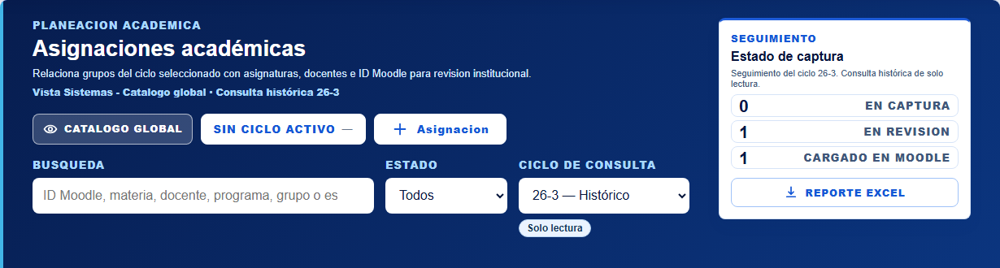
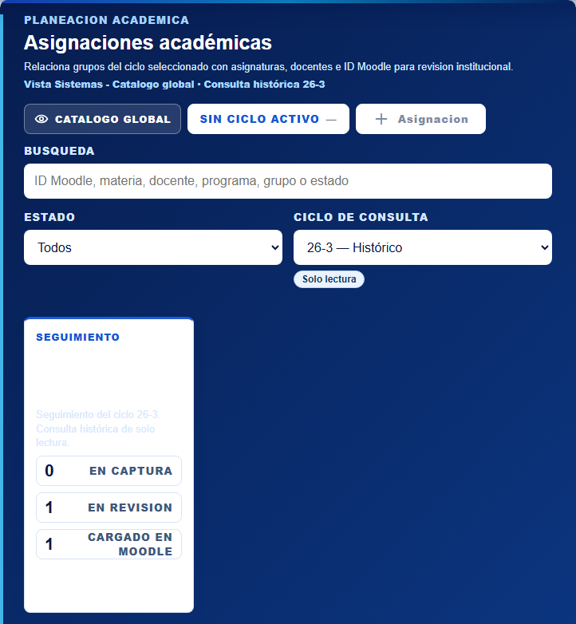
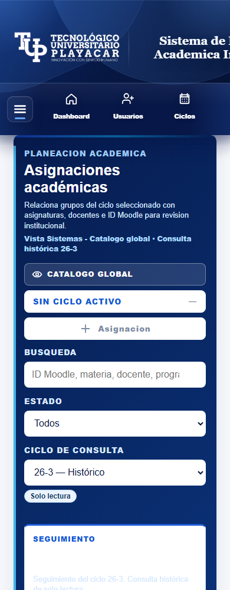
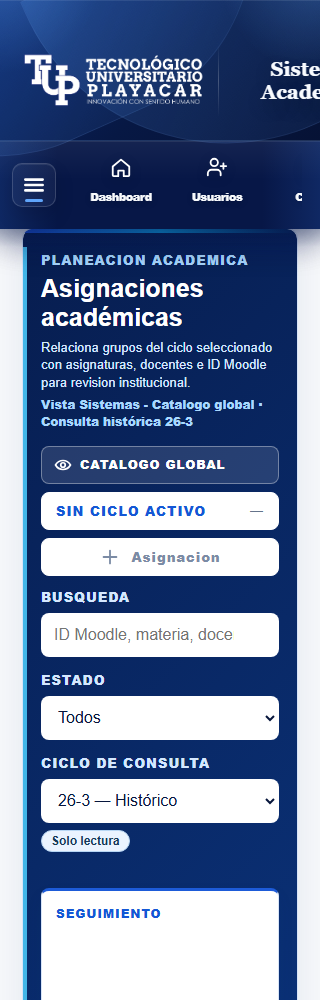

23 octubre 2026. Versión tunnel-r02-consulta-inline-20261023-02. Selección real 26-3 — Histórico. Datos compartidos conservados. Referencia: búsqueda amplia, estado central y ciclo a la derecha; en móvil los controles se apilan. Se conserva el seguimiento y el resto del encabezado.
Aceptación visual del propietario pendiente. Informe · Comprobación técnica



